Shingu, Wakayama: things to do, food and stays
Shingu · Wakayama
Shingu
Highlighted on the Wakayama map.

Stay
新宮ユーアイホテル
Shingu Yuai Hotel
サンシャインホテル
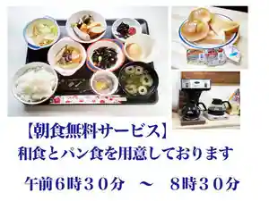
Sansha Inn Hotel
Hotel in Inosawa, Shingu with breakfast available.
ステーションホテル新宮
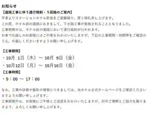
Station Hotel Shingu
Guest house 燈 TOMORI
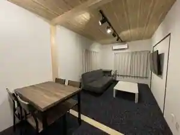
Guest house To TOMORI
貸切ゲストハウス 心結 新宮店
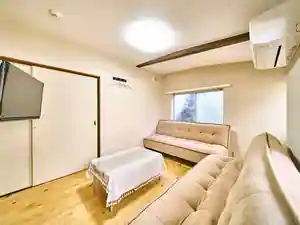
Kashikiri Guesthouse Kokoro Ketsu Shingu
Guesthouse in Midorigaoka, Shingu with family-friendly stays.
ホテルニューパレス
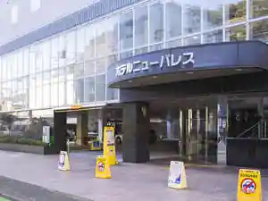
Hotel Nyuparesu
Hotel in Tantsuru, Shingu; 5-minute walk from Jrshingu Station.
Ｓｈｉｎｇｕ Ｇｕｅｓｔ Ｈｏｕｓｅ 奏
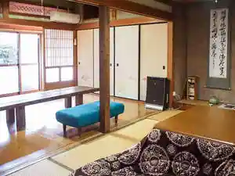
Shingu Guest House So
Inn in Ikeda, Shingu with a renovated traditional house; 5-minute walk from Shingu Station.
ＡＪＩＴＯ Ｈｏｓｔｅｌ ＆ Ｃａｆｅ Ｂａｒ
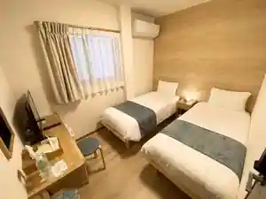
AJITO Hostel & Cafe Bar
グランホテル
Guran Hotel
Kumano Stay nuku
Kumano Stay nuku
マーケットステイ新宮
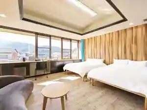
Makettosutei Shingu
ゲストハウスＰｉｋｏ
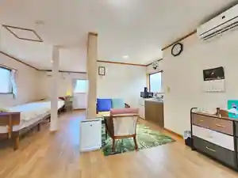
Guesthouse Piko
Guesthouse in Kusurishi, Shingu with one group per day.
Dining
香梅堂
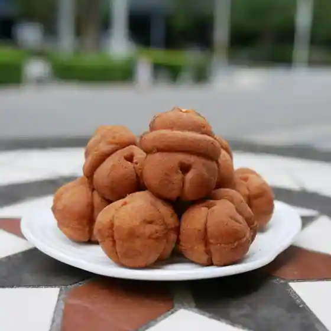
Kaori Baido
東宝茶屋
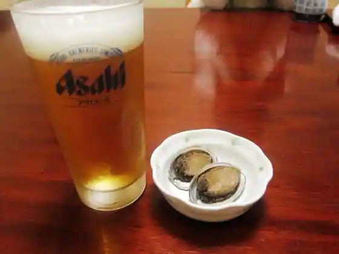
Toho Chaya
カイハミ・カルネ
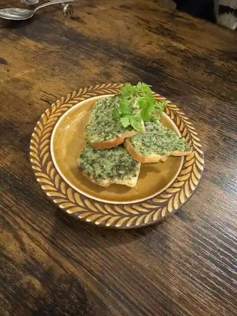
Kaihami Karune
徐福寿司 駅前店
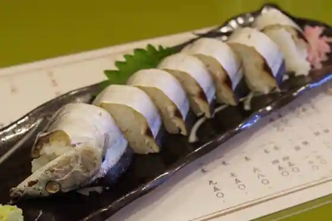
Jofuku Sushi Ekimae
総本家 めはりや 新宮本店
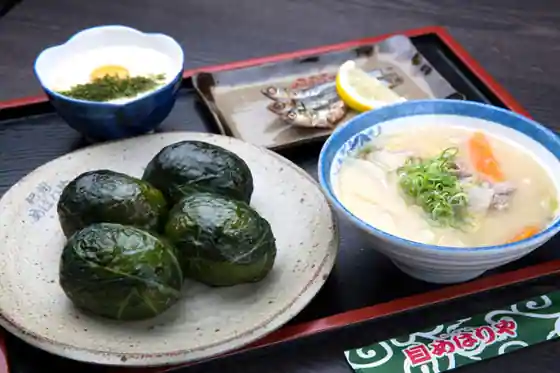
So Honke Mehariya Shingu Hon
仲氷店
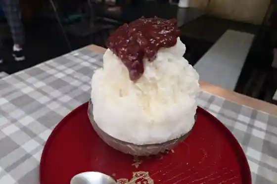
Naka Kori
速水
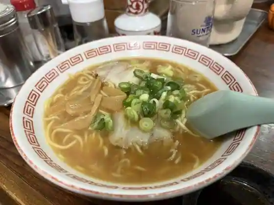
Hayami
かつ田
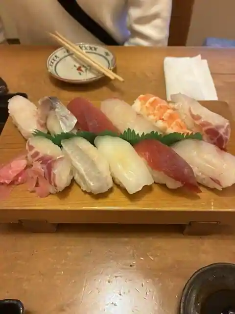
Katsu Ta
うなぎ料理 鹿六
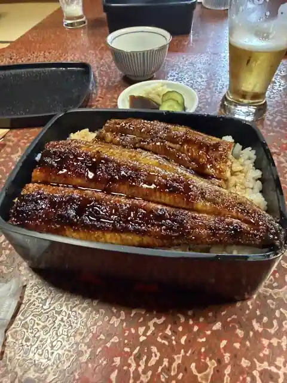
Unagi Ryori Shika Roku
かあちゃんの店
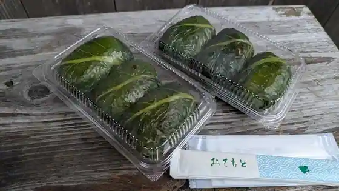
Kachanno
松葉屋
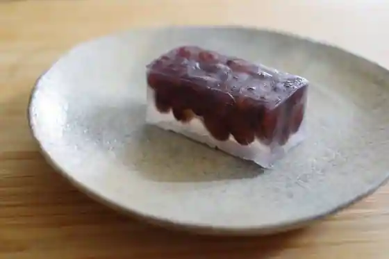
Matsuba Ya
南海堂
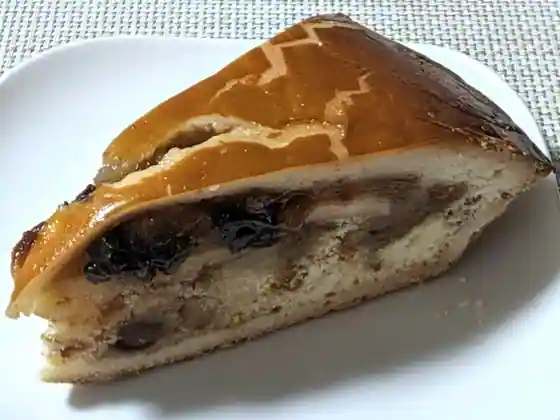
Nankai Do
楽
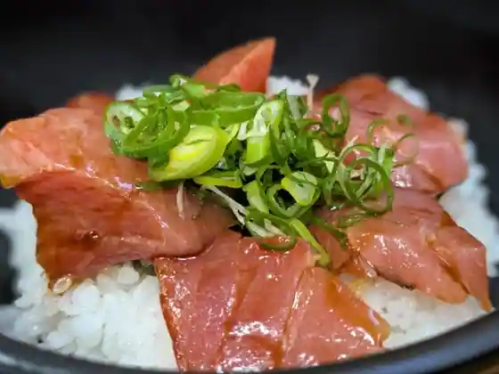
Raku
焼肉ひげ
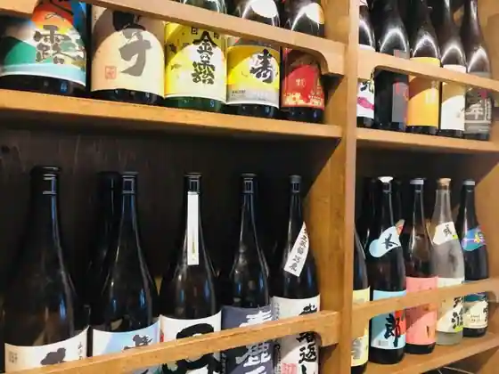
Yakiniku Hige
寿司 和食 まえ田
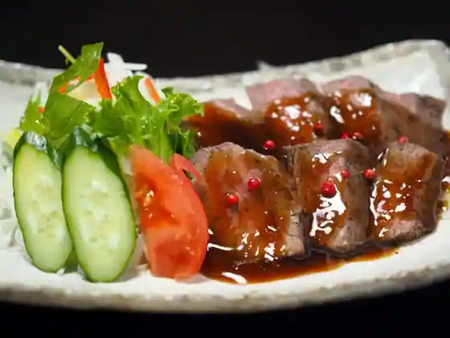
Sushi Washoku Mae Ta
和の食彩 古城
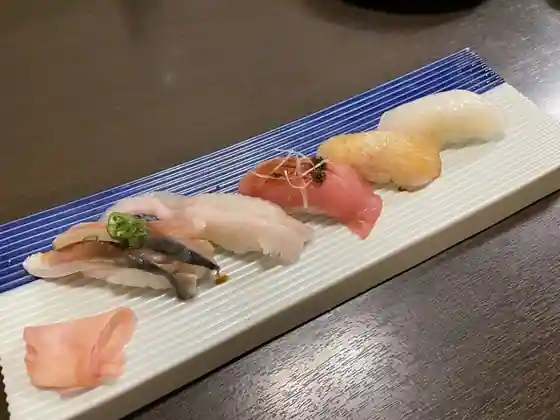
Nagono Shokusai Kojo
中華料理万惣
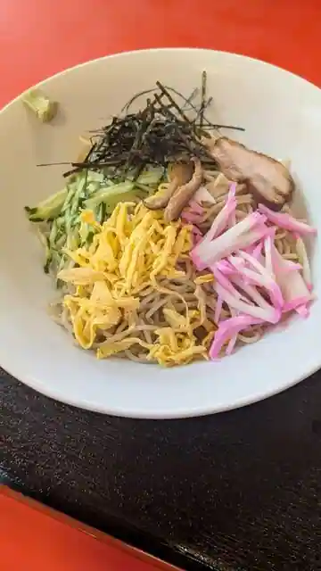
Chukaryori Manso
はもん亭
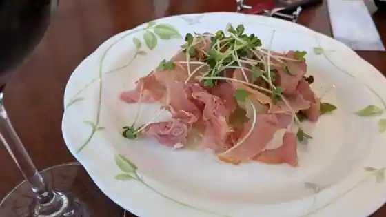
Hamon Tei
マジックピエロ
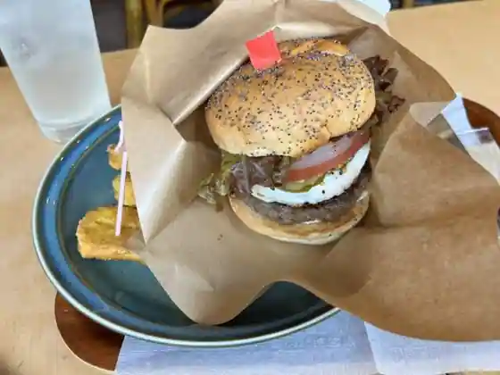
Majikkupiero
市場食堂
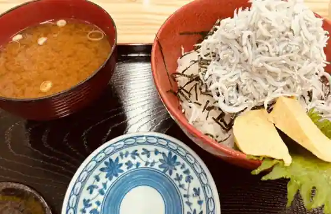
Shijo Shokudo
居酒屋マナヤ
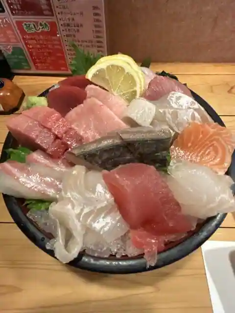
Izakaya Manaya
心楽
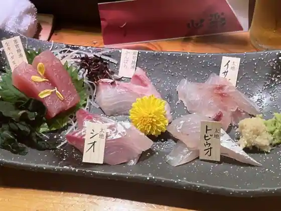
Kokoro Raku
平成飯店
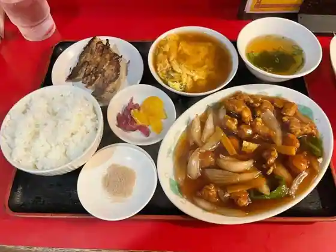
Heisei Meshi
はやたま欧食堂 ポルト
Hayatama O Shokudo Poruto
Sights
Kami Kura Shrine

Kumano Hayatama Taisha

Jofuku Park

Fu Shima Forest

Kuwa no Ki Falls
Ana Shima (Ana Shima Itsukushima Shrine no Sekizo Mono)
A Suga Shrine
Shingu (Tan Tsuru) Castle Ruins
Kuroshio Park
Hana Shiro Falls
Kyunishi Village Ie House (Nishi Village Isaku Memorial Museum)
Sato Haruo Memorial Museum
Kyu Chappuman Tei
Kumano Kodo Takano Saka
Kumano Kodo Nakahechi Daiun Torikoshi Enza Ishi
Suzushima